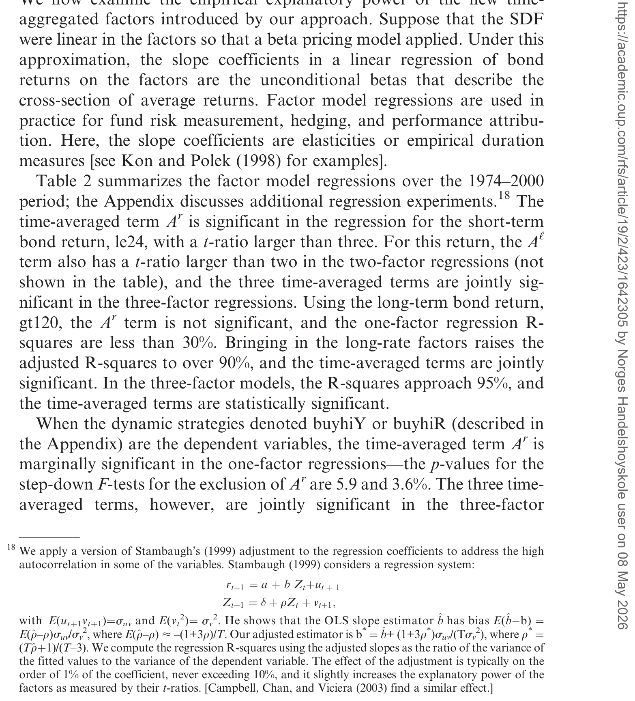
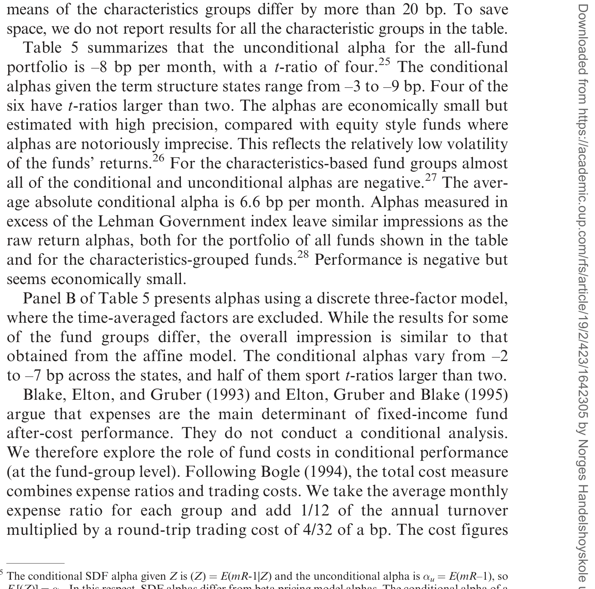
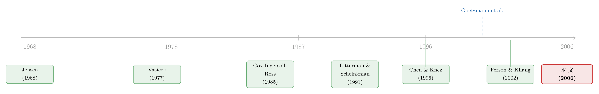
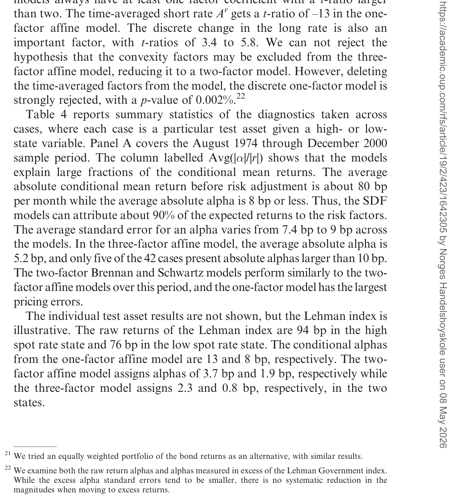

基金经理偷偷在月中换了仓，我们的「业绩尺子」还准吗？
本文读的是 Ferson, Henry & Kisgen (2006, Review of Financial Studies)：他们用连续时间利率期限结构模型导出的随机贴现因子（SDF）来给政府债券基金打分。关键在于，连续时间模型经过「时间聚合」后会自动长出一批新的经验因子——状态变量的时间平均值，而这批因子恰好能修正一个被忽视的「期中交易偏差」。落到数据上：1986–2000 年间美国政府债基金平均跑输不收费的基准组合，但在风险调整后，业绩被精确地估计为「略负、但经济上微不足道」，且毛业绩中性的假设无法被拒绝。
1 引言：一把可能从一开始就拿反了的尺子
先抛一个看似无聊、实则要命的问题：你想知道一个债券基金经理到底有没有本事，于是你拿他这个月的收益，减去一个基准的收益，剩下的就叫 alpha。听起来天经地义。可是——这个月里，他到底干了什么，你真的看见了吗？
你看见的，只是月初和月末两个时点的净值。可基金经理在这一个月里，可能根据利率的走势把久期 (duration) 调来调去，可能在 on-the-run 和 off-the-run 国债之间倒腾流动性差价，可能拿一堆利率衍生品在做多空。换句话说，你用「月度」的尺子，去量一个在「日度」甚至「分钟度」上不停动作的人。这中间会不会出问题？
固定收益这块，长期是个被研究界冷落的角落。文章一开篇就甩出一组数字：截至 2002 年 6 月，美国有 2057 只债券基金，占全部共同基金的 25%；它们管着刚过 $1 trillion 的资产，是 $6.6 trillion 全部基金资产的 15%。而 1990 到 2002 年间，固定收益基金的数量和资产规模分别涨了 97% 和 245%。这么大的一块市场，相对于股票型基金那汗牛充栋的研究，关于它的业绩评估文献却薄得可怜。
一个常见的直觉是：固定收益收益率波动小，业绩差异应该也小。但别忘了，正因为收益波动小，业绩度量的标准误也小——也就是说，只要尺子够准，反而更容易把那一点点真本事量出来。问题恰恰出在「尺子准不准」上。
2 真正的张力：期中交易偏差
接着，一个自然的问题是：月度尺子量月中交易，错在哪？
这正是 Goetzmann, Ingersoll & Ivkovic (2000) 和 Ferson & Khang (2002) 点破的「期中交易偏差 (interim trading bias)」。直觉是这样的：哪怕一个经理没有任何私人信息，只要他能在月中根据公开的市场状态调仓——比如利率一动他就改久期——他就能制造出一条非线性的收益分布，看上去就像「择时有方」。一把只看月初月末的尺子，会把这种纯粹由动态交易产生的形状，误读成 alpha。期权式的头寸（option-like positions）会放大同样的毛病，而这对大量使用衍生品的固定收益组合来说，尤其致命。
Ferson & Khang 给出的解法是「基于权重 (weight-based)」的业绩度量，要去看基金的实际持仓。可问题是，持仓数据往往比收益数据稀疏得多——你有月度收益，却未必有月度持仓。
然后，本文真正关键的一步出现了：能不能不去碰持仓，只用收益，就把期中交易偏差消掉？
答案藏在随机贴现因子的一个乘法性质里。设想 SDF \(m_{t,t+\Delta}\) 给 \(t\) 到 \(t+\Delta\) 这一小段定价；\(m_{t+\Delta,t+2\Delta}\) 给下一小段定价。由迭代期望定律，把两段乘起来：
$$ m_{t,t+2\Delta} = (m_{t,t+\Delta})\,(m_{t+\Delta,t+2\Delta}) $$
这个连乘的 SDF，能给所有「在 \(t\) 和 \(t+\Delta\) 两个时点、依据当时状态变量调仓」的策略正确定价。当 \(\Delta\to 0\)，它就能给一切非预期的动态策略定价——期中交易偏差，自动消失。而对连续时间期限结构模型来说，\(m\) 是指数函数的乘积，乘积变成指数的求和，于是——那批「时间平均」的项就这么冒出来了。这是全文的发动机。
3 模型：SDF 从哪里来，时间平均又是怎么长出来的
这是一篇有模型的论文，值得把核心一步步拆开。
资产定价的出发点是那个所有人都背得出的欧拉方程（论文 Equation 1）：
$$ E_t\!\left[\,m_{t,t+1}(\theta)\,R_{t+1}\,\right] = 1 $$
其中 \(R_{t+1}\) 是 \(N\) 维的「基础资产」毛收益向量，\(E_t(\cdot)\) 是 \(t\) 时刻的条件期望。如果一只基金 \(R_{p,t+1}\) 没有被精确定价，它的 SDF alpha 就定义为（Equation 2，沿用 Chen & Knez 1996）：
$$ \alpha_{pt} = E_t\!\left[\,m_{t,t+1}(\theta)\,R_{p,t+1}\,\right] - 1 $$
当 SDF 是因子的线性函数时，这个 SDF alpha 与传统 beta 定价里的 alpha 成正比；在 CAPM 这个特例里，它正比于 Jensen (1968) 的 alpha。所以这不是另起炉灶，而是把熟悉的 alpha 装进了一个更一般的框架。
接下来是关键。期限结构模型给状态变量 \(X\) 指定一个连续时间扩散过程（Equation 3）：
$$ dX_t = \mu(X_t)\,dt + \sigma(X_t)\,dw $$
其中 \(dw\) 是标准维纳过程的局部增量；\(X\) 可以是短期利率的水平、期限结构的斜率，等等。模型再指定一个风险的市场价格 \(q(X)\)。然后，借助 Girsanov 定理（见 Cox, Ingersoll & Ross 1985b），这类模型可以被证明蕴含如下形式的 SDF——这就是全文最核心的方程 Equation 4：
其中（同 Equation 4）
$$ A_{t+1}=\int_t^{t+1}\! r_s\,ds,\quad B_{t+1}=\int_t^{t+1}\! q(X_s)\,dw_s,\quad C_{t+1}=\frac12\int_t^{t+1}\! q(X_s)^2\,ds $$
注意这三项全都是对时间的积分。这正是「时间平均」的来源：当我们要用月度数据时，把一个月切成 \(1/\Delta\) 个长度为 \(\Delta\) 的小段（论文取一天），用一阶 Euler 近似把积分换成求和（Equation 6）：
$$ A_{t+1}\;\approx\;\sum_{i=1,\dots,1/\Delta} r\!\left[t+(i-1)\Delta\right]\Delta $$
于是 \(A_{t+1}\) 不再只是月初月末的两个端点，而是一整个月里每日短期利率的时间平均。Stanton (1997) 验证过，用日度数据近似月度积分，精度高到几乎与真值无法区分，更高阶的近似只带来微乎其微的改进——所以这一步近似是站得住的。
4 经验 SDF：旧因子之外，多出来的那一半
把仿射 (affine) 期限结构模型的风险价格代进去，整理成约简形式，就得到可以直接上数据的经验 SDF（论文 Equation 9a，三因子仿射模型）：
$$ m_{t,t+1}(\theta)=\exp\!\big\{\,a + b\,Ar_{t+1} + c\,(r_{t+1}-r_t) + d\,Al_{t+1} + e\,(l_{t+1}-l_t) + f\,Ac_{t+1} + g\,(c_{t+1}-c_t)\,\big\} $$
其中 \(r\)、\(l\)、\(c\) 分别是瞬时短期利率、长期利率与期限结构的曲率——正是 Litterman & Scheinkman (1991) 那著名的「水平、斜率、曲率」三因子，而 \(Ar_{t+1}=\sum r[t+(i-1)\Delta]\Delta\) 等是它们的日度时间平均。
这里有一个反直觉、却是全文画龙点睛的观察：号称「单因子」的模型，其实依赖两个因子。因为时间聚合，它既包含短期利率的离散变化 \((r_{t+1}-r_t)\)，又包含整月日度水平的平均 \(Ar_{t+1}\)。两因子仿射模型则有长短利率的变化和它们的平均；三因子再加上曲率的变化与平均。而 Brennan & Schwartz (1979) 那个两因子模型干脆只用日度平均、不用离散变化，一口气贡献了五个经验因子。换句话说，连续时间模型不是凭空多塞了几个因子，而是「期中交易」这件事逼着它必须长出这些时间平均项。
那么，这些新因子到底有没有用？这是必须用数据回答的实证问题。作者先在被动基准和动态债券策略上估计因子模型——结果是这些时间平均的经验因子在因子模型回归里贡献了实打实的解释力，并且把模型的定价误差压了下去。如表 2 所示，新因子绝非装饰。

Table 2: summarizes the factor model regressions over the 1974–2000
这里还有一处克制得很聪明的设计：约简形式里识别出的参数个数，少于期限结构模型底层的参数个数。作者大可以把利率过程的全部结构都塞进来、识别出更多参数，但他们没有。理由很实在：一旦你用上利率过程的全部结构，而这个过程又被设定错了，设定误差就会顺着管子一路渗进业绩度量里。少用一点结构，换来对利率过程误设的稳健性。这是一种「故意不把话说满」的智慧。
5 数据：从 67 只到 878 只
样本是从 CRSP 共同基金库里按投资目标代码筛出来的美国政府债券基金。1986 年之前每年有月度收益数据的基金还不到 40 只，所以基金样本从 1986 年 1 月起步——以 1985 年末目标代码计有 67 只，到 2001 年 6 月升至 878 只，共 6552 条基金—年记录。
作者对样本做了一连串筛查。为对付「回填偏差 (back-fill bias)」——基金在正式公开发行前可能被「孵化」（incubate）、事后才补报数据——他们删掉了基金成立当年及之前的所有年份，仅此一项就剔除了 539 条记录。用来给基金分组的特征（费率、规模、年龄、过往收益）则要到 1988 年才齐备。
用于构造经验因子的日度利率数据、月度债券收益、以及做模型诊断的动态期中交易策略，都在附录里交代。基准策略的因子模型估计窗口更长，覆盖 1974–2000 年。
6 主要结果：风险一调，本事就没了
现在到了揭晓答案的时刻。
第一个发现，关于基准本身。SDF 模型能解释这些被动与动态组合条件期望收益里相当大的一块。举个具体的：Lehman 政府债券指数的月度收益，在 1986–2000 年间随期限结构状态在 61 到 132 个基点之间摆动——这是一个不小的区间。可一旦用三因子 SDF 模型做风险调整，条件 alpha 就被压到了不足 3 个基点。也就是说，那看似可观的收益波动，绝大部分是对期限结构风险的合理补偿，而非异常收益。
第二个发现，关于基金。1986–2000 年间，这些基金平均跑输了不收费的基准组合——这本身并不意外，毕竟基金要扣费。真正有意思的是下一步：作者按期限结构的水平、斜率、曲率来做条件分组，发现基金条件期望收益在不同期限结构状态之间的差异，比按费率、规模、年龄、过往收益等特征分组得到的差异还要大。换句话说，「现在处于什么宏观利率状态」比「这是一只什么样的基金」更能解释收益的横截面变化。

Table 5: summarizes that the unconditional alpha for the all-fund
第三个，也是最克制的发现：一旦做了风险调整，条件业绩被精确地估计出来——略微为负，但经济上微不足道；而且，毛于基金费用的业绩中性这一假设，无法被拒绝。如表 5 所示，全样本基金的无条件 alpha 在统计上压根立不住。说白了，扣费之前，政府债券基金经理这个群体，并没有显著地创造或毁灭价值。
这个结论与股票型基金研究里反复出现的图景遥相呼应：平均而言，主动管理的超额收益，扣费前就已经接近于零（关于业绩在长跨度上的衰减，可参见《「跑赢大盘」是会过期的：当一只基金的胜率，随着持有年限一年年缩水》）。
值得一提的是方法上的两处巧思。其一，估计用的是 Hansen (1982) 的广义矩估计 (GMM)，把基金的条件 alpha 和 SDF 模型参数同时估出来（Equations 10a, 10b）：
$$ E_t\!\left\{\left[\,m_{t,t+1}(\theta)\,R_{t+1}-1\,\right]\otimes D_t\right\}=0 $$ $$ E\!\left\{\left[\,m_{t,t+1}(\theta)\,R_{p,t+1}-1-\alpha_p'D_t\,\right]\otimes D_t\right\}=0 $$
这里 \(D_t\) 是「条件哑变量 (Conditioning Dummy Variable)」，一组预先确定的 $(0,1)$ 工具，标记期限结构所处的状态；基金的条件 alpha 写作 \(\alpha_{pt}=\alpha_p'D_t\)。妙处在于，这种「非参数」的写法绕开了 Christopherson, Ferson & Glassman (1998) 那种「条件 alpha 是滞后工具的线性函数」的线性假设——代价是对条件信息的刻画比较粗，但换来了简洁与可解释性。
其二，Farnsworth et al. (2002) 证明过，对一只基金单独估计这套系统，得到的 alpha 点估计和标准误，与把任意多只基金放进同一系统联合估计完全一致。这太省事了：可用基金数远多于月度时间序列长度，全样本联合估计本来根本不可行。
7 文献脉络：从「CAPM 管不了债券」到「让债券模型自己说话」
把镜头拉远，这篇论文坐在两条线交汇的地方。
第一条线，是资产定价模型与债券的恩怨。早在 Roll (1970) 就发现，Sharpe (1964) 的 CAPM 对债券并不灵；Mehra & Prescott (1985) 又指出，简单的消费模型没法同时给国库券和股票定价。多因子模型看上去好些（Ferson & Harvey 1991；Campbell 1996），但学界更常见的妥协是：用债券因子给债券定价，用股票因子给股票定价。本文老老实实接受了这个传统，专心用期限结构模型去给政府债券基金打分。而期限结构模型这一支，从 Vasicek (1977)、Cox, Ingersoll & Ross (1985a) 的单因子，到 Brennan & Schwartz (1979) 的两因子，再到 Litterman & Scheinkman (1991) 揭示的「水平—斜率—曲率」三因子，正好提供了现成的状态变量。
第二条线，是业绩评估方法论。从 Jensen (1968) 的 alpha 出发，Chen & Knez (1996) 把业绩度量搬进 SDF 框架，Farnsworth et al. (2002) 进一步把 SDF 用于基金评估并发现股票基金的 alpha 偏差很小。与此并行，Ferson & Schadt (1996)、Christopherson, Ferson & Glassman (1998) 把「条件」引入业绩评估——业绩要看你处在什么经济状态。而真正把本文逼出来的，是 Goetzmann, Ingersoll & Ivkovic (2000) 与 Ferson & Khang (2002) 对期中交易偏差的揭示。

本文的位置就清楚了：它把「期限结构模型提供状态变量」这条线，和「SDF 框架做条件业绩评估」这条线焊接在一起，用时间聚合这个支点，一举把期中交易偏差从「需要持仓数据才能修」变成「只用收益就能修」。这也是它区别于同期工作的关键——别人在问「债券基金赚不赚钱」，它在问「我们的尺子本身对不对」。（关于把条件信息引入定价核、并用方差下界去检验它，可参见《定价核的「测谎仪」，为什么要请进期权？》；关于时变 alpha/beta 究竟是真本事还是模型造出来的，可参见《会动的 beta：基金经理的「择时本事」，是真的，还是统计模型替他造出来的？》。）
评论与延伸（Q&A + 研究方向）
(a) 几个可能的疑问
Q：所谓「期中交易偏差」，和普通的 omitted-variable 偏差是一回事吗？
不是。它不是漏了某个解释变量，而是「测量频率」与「交易频率」错配带来的偏差：哪怕没有任何私人信息，只要经理能在测量区间内依据公开状态调仓，月度尺子就会把这种动态交易制造的非线性收益形状误读成 alpha。本文的解法不是补一个变量，而是换一个能正确给所有动态策略定价的 SDF。
Q：单因子模型为什么会「依赖两个因子」？这不是自相矛盾吗？
不矛盾，这恰恰是时间聚合的产物。连续时间单因子模型经过对一个月的时间积分后，约简形式里同时出现了短期利率的离散变化 \((r_{t+1}-r_t)\) 和它的日度时间平均 \(Ar_{t+1}\)。「单因子」指的是底层只有一个瞬时状态变量，而非经验回归里只有一个回归元。
Q：为什么不把利率过程的全部结构都用上，多识别几个参数岂不是更有效率？
因为稳健性。一旦用满底层结构，而利率过程又被设定错了（连续时间利率过程的设定本身就充满争议，比如 \(\sigma(X)=X^\gamma\) 里 \(\gamma\) 到底是 0.5、1.0 还是 1.5），设定误差会顺着管子渗进业绩度量。少用结构，是用一点统计效率去换对误设的免疫力。
Q：结论说扣费前业绩「中性」，是不是等于说主动管理一文不值？
不能这么读。它说的是「群体平均」在统计上无法拒绝中性，且经济量级很小；这并不排除个别基金有持续本事，也不排除业绩在不同期限结构状态间有差异——事实上本文恰恰发现状态间差异比基金特征间差异更大。
Q：用日度数据近似月度积分，会不会引入新的近似误差，反而污染结论？
作者引 Stanton (1997) 的证据：日度近似月度积分，精度高到与真值几乎不可分，高阶近似改进可忽略。更进一步，Gourieroux, Montfort & Polimenis (2002) 指出，若一开始就假设仿射模型在长度 \(\Delta\) 的离散期上成立，那么 Equation 6 的求和对更长持有期是精确成立的，连近似都不需要。
Q：这套方法只能用于政府债券基金吗？能不能同时给股债定价？
原则上 SDF 框架是通用的，但实证上「同时给股债定价」极难（Roll 1970、Mehra & Prescott 1985 都碰过壁）。本文明智地接受「债券因子定债券」的传统，把野心限制在政府债券基金内部，换取识别上的干净。
(b) 几个可能的研究问题与提案
-
把方法搬到公司债基金，并把信用风险作为新状态变量。 【经济故事】政府债基金只暴露在期限结构风险下，而公司债基金还扛着信用利差风险与流动性风险，期中交易偏差可能更严重（信用衍生品、火线甩卖都会制造非线性收益）。把违约强度或信用利差作为额外的连续时间状态变量，时间聚合会长出「信用利差的时间平均」这类新因子。 【可行性】中。数据上 CRSP/TRACE 加公司债基金持仓可得；难点在于信用过程的连续时间设定比利率更不稳健，且违约是跳跃而非纯扩散，需要把模型扩展到 jump-diffusion，识别更脆弱。
-
用本方法重新检验「外资持有人」对债券基金业绩度量的影响。 【经济故事】如果一类投资者（如外资）系统性地在月中、跨时区调仓，传统月度尺子对持有这类资金的基金会有更大的期中交易偏差。可比较外资占比高/低的基金，看 SDF 修正前后 alpha 的差异是否随外资占比单调变化。 【可行性】中偏低。需要基金层面的投资者构成数据（往往不公开），识别上要担心外资占比与基金风格的内生关联，可能需要指数纳入之类的外生冲击做工具。
-
把「条件哑变量」换成连续条件信息，量化「粗刻画」的代价。 【经济故事】本文用 $(0,1)$ 哑变量刻画期限结构状态，简洁但粗糙。一个自然的问题是：把 \(D_t\) 换成连续的预测变量（如利差、期限利差），alpha 的点估计和精度会变多少？这能直接量出「简洁性 vs. 信息损失」的权衡。 【可行性】高。纯方法论实验，数据与本文完全相同，只需改 GMM 的矩条件设定，doable。
-
用本框架检验业绩度量是否「可被操纵」。 【经济故事】Goetzmann 等人后续提出过「防操纵」的业绩度量。本文的 SDF alpha 在理论上对动态交易稳健，那它在面对刻意设计来「刷分」的期权式策略时，是否真的比传统 alpha 更难被操纵？可以用模拟把已知的操纵策略喂进两套尺子，比较各自的误判率。 【可行性】高。纯模拟，无需新数据；与《把「跑分」交给基金经理之前，先问问这个分数能不能被刷》的思路天然衔接。
-
把模型诊断（Table 4 那类设定检验）系统化为一套「期限结构 SDF 选美」。 【经济故事】本文比较了单/双/三因子仿射模型与 Brennan-Schwartz 模型，但没有给出一个统一的、跨模型可比的设定检验排名。能否用 Hansen & Jagannathan (1997) 的设定误差距离，给这些 SDF 模型做一次正式的「选美」？ 【可行性】高。数据现成，方法成熟，主要是工程量。

Table 4: reports summary statistics of the diagnostics taken across
我的判断。 这篇论文的真正贡献不在「政府债基金不赚钱」这个略显平淡的结论上，而在它把一个抽象的连续时间数学性质——SDF 的乘法可分解性——翻译成了一个具体、可操作、且只需收益数据的业绩度量工具，顺手解决了期中交易偏差。这是那种「方法本身比结论更值钱」的论文。
对识别的担忧有两点。其一，所有结论都建立在「仿射期限结构模型大致正确」之上；作者用「少用结构」来求稳健，但仿射模型对真实利率动态（尤其是非线性漂移、波动率结构）的误设到底渗漏了多少，文中给的是间接论证而非直接的敏感性边界。其二，条件哑变量对状态的刻画偏粗，「无法拒绝中性」里有多少是真中性、多少是检验功效不足，值得再追。
后续我最想看到的，是把这套时间聚合的逻辑推到信用市场去——公司债基金重仓衍生品、又常在危机中被迫调仓，期中交易偏差理应更大，而那里恰恰是业绩评估最混乱、也最有现实意义的战场。
参考文献
- Brennan, M. J., and E. Schwartz (1979). A Continuous Time Approach to the Pricing of Bonds. Journal of Banking and Finance 3, 133–155.
- Chen, Z., and P. J. Knez (1996). Portfolio Performance Measurement: Theory and Applications. Review of Financial Studies 9, 511–556.
- Cox, J. C., J. E. Ingersoll, and S. A. Ross (1985a). A Theory of the Term Structure of Interest Rates. Econometrica 53, 385–346.
- Cox, J. C., J. E. Ingersoll, and S. A. Ross (1985b). An Intertemporal General Equilibrium Model of Asset Prices. Econometrica 53, 363–384.
- Farnsworth, H. K., W. Ferson, D. Jackson, and S. Todd (2002). Performance Evaluation with Stochastic Discount Factors. Journal of Business 75, 473–504.
- Ferson, W., and K. Khang (2002). Conditional Performance Measurement Using Portfolio Weights: Evidence for Pension Funds. Journal of Financial Economics 65, 249–282.
- Goetzmann, W., J. Ingersoll, and Z. Ivkovic (2000). Monthly Measurement of Daily Timers. Journal of Financial and Quantitative Analysis 35, 257–290.
- Hansen, L. P. (1982). Large Sample Properties of the Generalized Method of Moments Estimators. Econometrica 50, 1029–1054.
- Jensen, M. C. (1968). The Performance of Mutual Funds in the Period 1945–1964. Journal of Finance 23, 389–416.
- Litterman, R., and J. Scheinkman (1991). Common Factors Affecting Bond Returns. Journal of Fixed Income 1, 54–61.
- Mehra, R., and E. Prescott (1985). The Equity Premium: A Puzzle. Journal of Monetary Economics 15, 145–162.
- Roll, R. (1970). The Behavior of Interest Rates: An Application of the Efficient Market Model to U.S. Treasury Bills. Basic Books, New York.
- Stanton, R. (1997). A Nonparametric Model of Term Structure Dynamics and the Market Price of Interest Rate Risk. Journal of Finance 52, 1973–2002.
- Vasicek, O. A. (1977). An Equilibrium Characterization of the Term Structure. Journal of Financial Economics 5, 177–188.